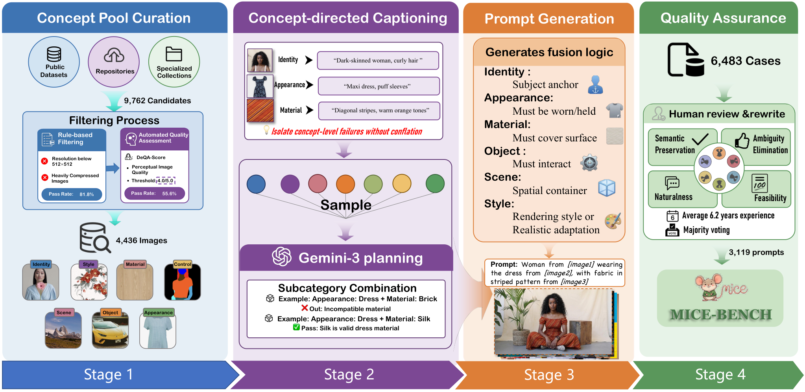
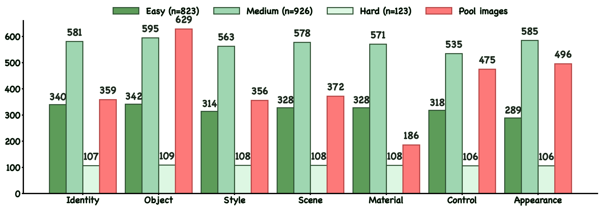
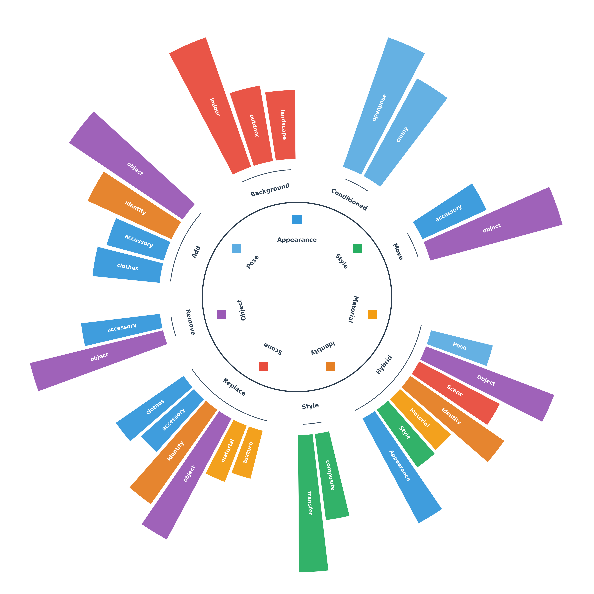
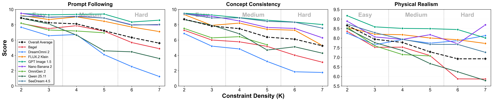
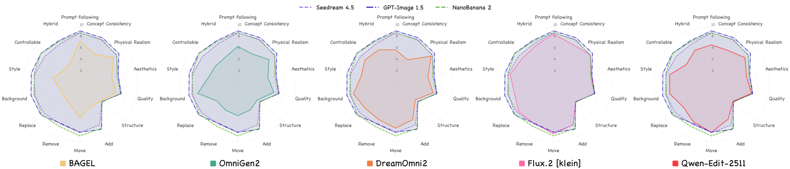
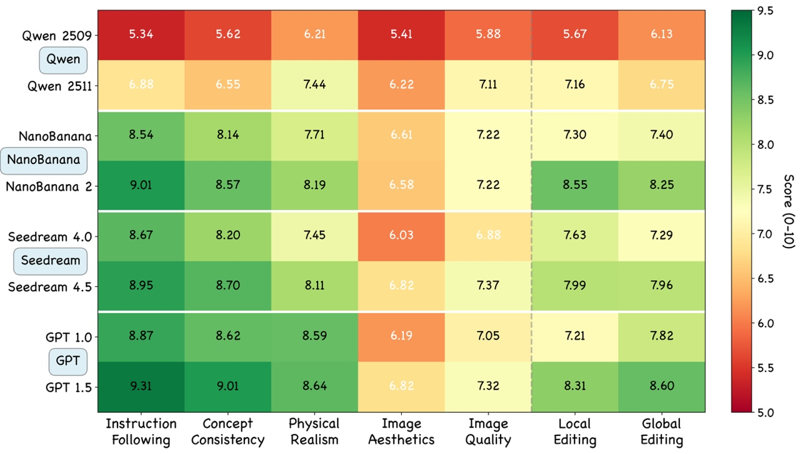
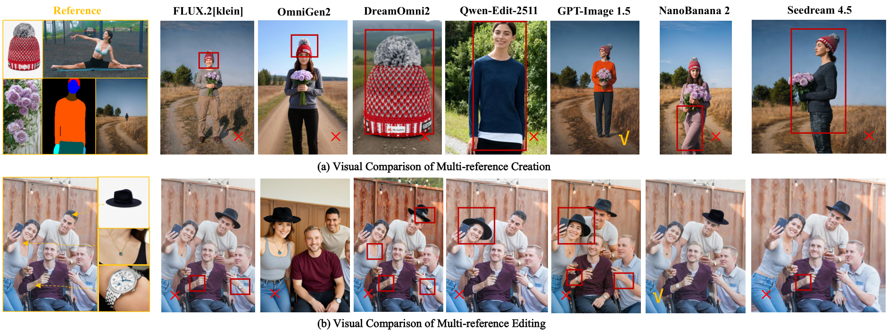
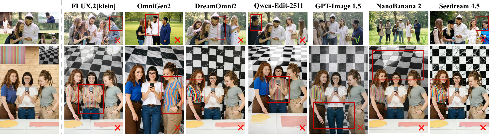

One benchmark, two complementary capabilities
MICE-Bench stress-tests whether generative models can bind multiple visual references to distinct semantic roles, compose them coherently, and preserve what should remain unchanged.
IdentityObjectStyleSceneMaterialControlAppearance
Concept-centric construction with expert verification
A four-stage pipeline curates licensed visual concepts, isolates concept-specific descriptions, plans feasible compositions, and validates every case through professional review.

Creation and editing

Multi-reference creation
1,872 cases spanning all 120 combinations of the seven concept dimensions, from two-reference composition to seven-concept stress tests.

Multi-reference editing
1,247 cases across 22 atomic subtasks: Add, Replace, Move, Remove, Style, Background, Controllable, and Hybrid editing.
More concepts reveal a persistent capability gap
Across 13 representative systems, concept consistency and physical realism decline as constraint density increases. Closed-source systems lead overall, while the strongest open models narrow the gap in visual quality.



Qualitative comparisons


Citation
@inproceedings{luo2026micebench,
title = {MICE-Bench: A Challenging and Comprehensive Benchmark for
Multi-Reference Image Creation and Editing},
author = {Luo, Siqi and Zheng, Huayu and others},
booktitle = {International Conference on Machine Learning},
year = {2026}
}